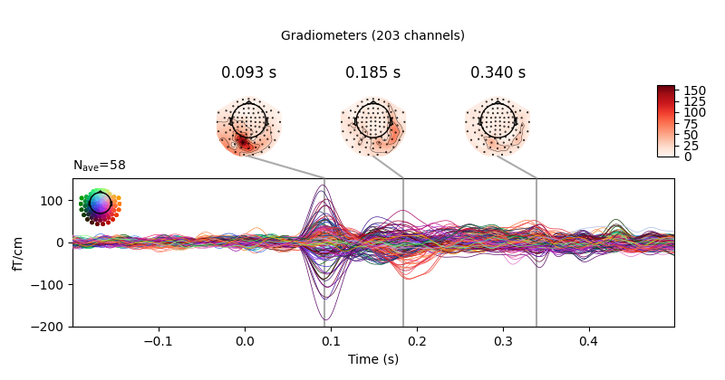
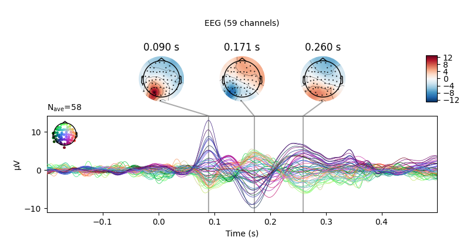
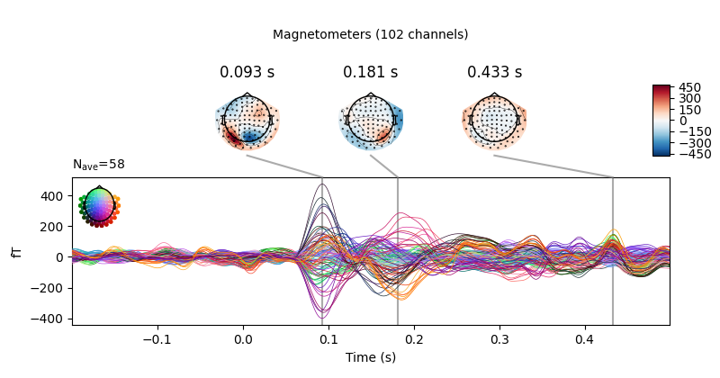
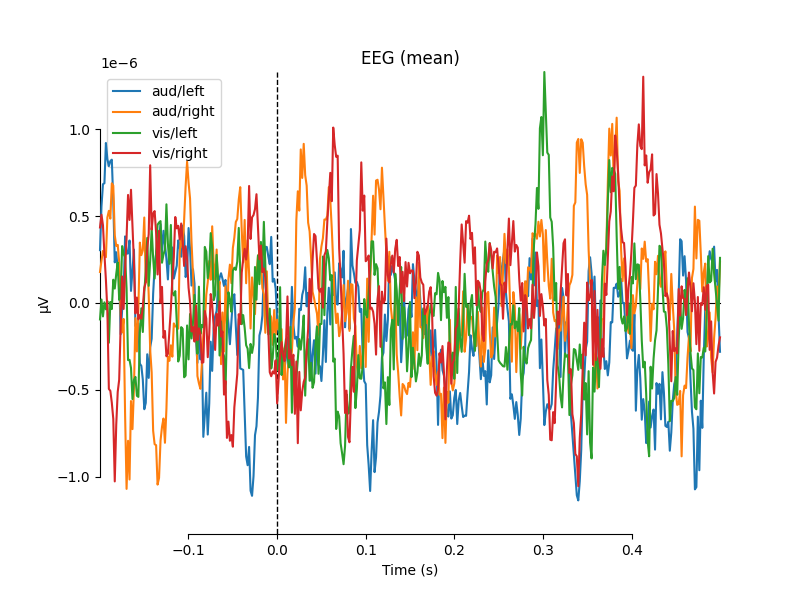
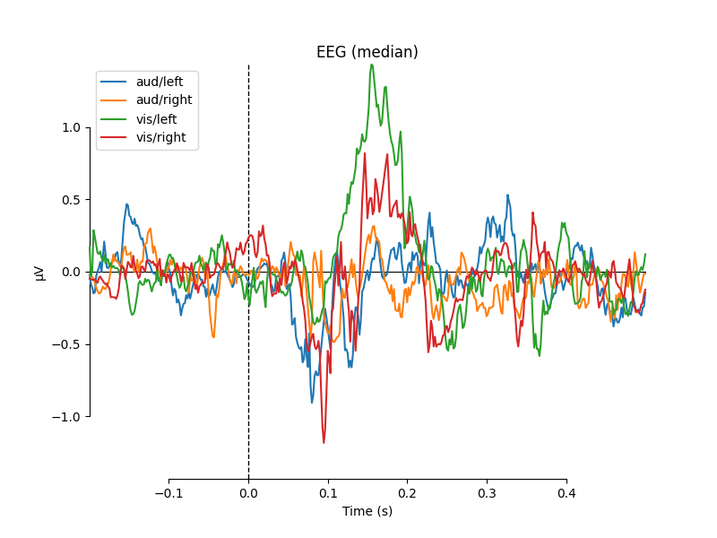
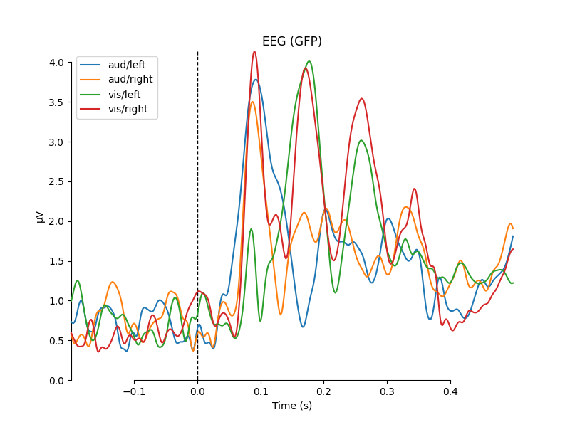
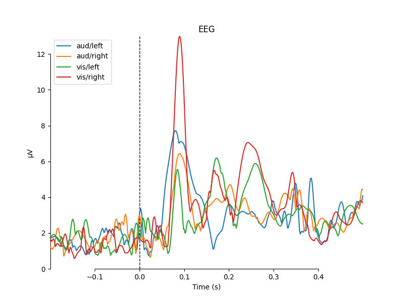
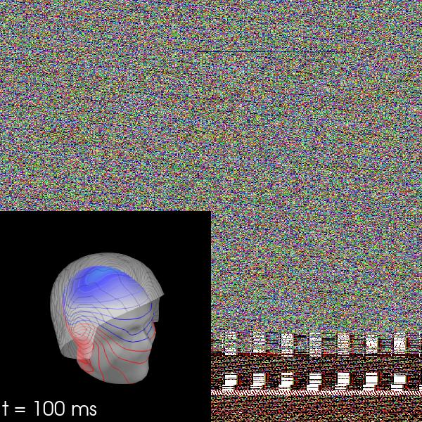
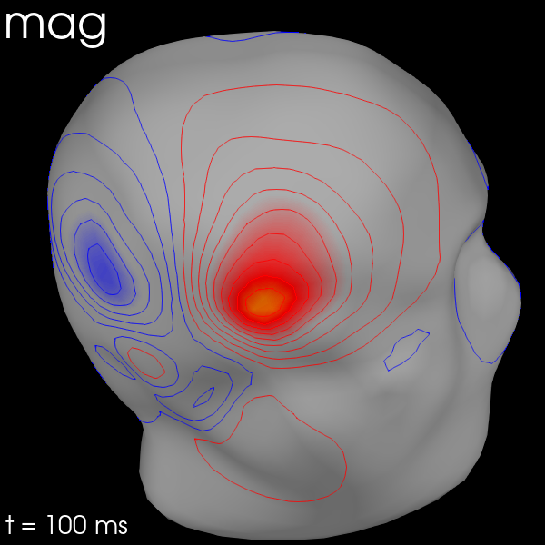
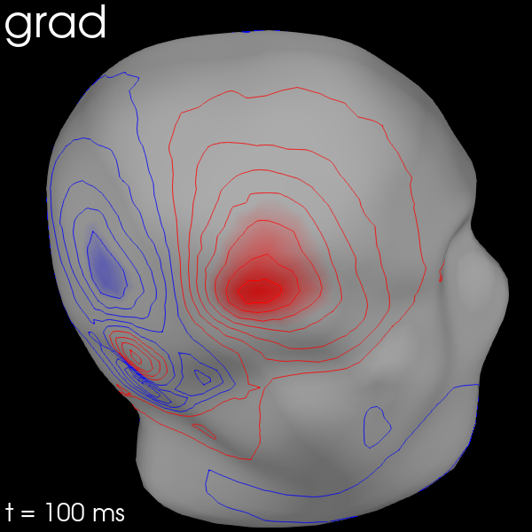

Note
Click here to download the full example code
Visualizing Evoked data¶
This tutorial shows the different visualization methods for
Evoked objects.
Page contents
As usual we’ll start by importing the modules we need:
import os
import numpy as np
import mne
Instead of creating the Evoked object from an
Epochs object, we’ll load an existing Evoked
object from disk. Remember, the .fif format can store multiple
Evoked objects, so we’ll end up with a list of
Evoked objects after loading. Recall also from the
Loading and saving Evoked data section of the introductory Evoked tutorial that the sample Evoked objects have not
been baseline-corrected and have unapplied projectors, so we’ll take care of
that when loading:
sample_data_folder = mne.datasets.sample.data_path()
sample_data_evk_file = os.path.join(sample_data_folder, 'MEG', 'sample',
'sample_audvis-ave.fif')
evokeds_list = mne.read_evokeds(sample_data_evk_file, baseline=(None, 0),
proj=True, verbose=False)
# show the condition names
for e in evokeds_list:
print(e.comment)
Out:
Left Auditory
Right Auditory
Left visual
Right visual
To make our life easier, let’s convert that list of Evoked
objects into a dictionary. We’ll use /-separated
dictionary keys to encode the conditions (like is often done when epoching)
because some of the plotting methods can take advantage of that style of
coding.
conds = ('aud/left', 'aud/right', 'vis/left', 'vis/right')
evks = dict(zip(conds, evokeds_list))
# ‾‾‾‾‾‾‾‾‾‾‾‾‾‾‾‾‾‾‾‾‾‾‾‾‾‾‾‾‾‾ this is equivalent to:
# {'aud/left': evokeds_list[0], 'aud/right': evokeds_list[1],
# 'vis/left': evokeds_list[2], 'vis/right': evokeds_list[3]}
Plotting signal traces¶
The most basic plot of Evoked objects is a butterfly plot of
each channel type, generated by the evoked.plot()
method. By default, channels marked as “bad” are suppressed, but you can
control this by passing an empty list to the exclude parameter
(default is exclude='bads'):
evks['aud/left'].plot(exclude=[])
Notice the completely flat EEG channel and the noisy gradiometer channel
plotted in red color. Like many MNE-Python plotting functions,
evoked.plot() has a picks parameter that can
select channels to plot by name, index, or type. In the next plot we’ll show
only magnetometer channels, and also color-code the channel traces by their
location by passing spatial_colors=True. Finally, we’ll superimpose a
trace of the global field power across channels:
evks['aud/left'].plot(picks='mag', spatial_colors=True, gfp=True)
Plotting scalp topographies¶
In an interactive session, the butterfly plots seen above can be
click-dragged to select a time region, which will pop up a map of the average
field distribution over the scalp for the selected time span. You can also
generate scalp topographies at specific times or time spans using the
plot_topomap() method:
Additional examples of plotting scalp topographies can be found in Plotting topographic maps of evoked data.
Arrow maps¶
Scalp topographies at a given time point can be augmented with arrows to show
the estimated magnitude and direction of the magnetic field, using the
function mne.viz.plot_arrowmap():
mags = evks['aud/left'].copy().pick_types(meg='mag')
mne.viz.plot_arrowmap(mags.data[:, 175], mags.info, extrapolate='local')

Joint plots¶
Joint plots combine butterfly plots with scalp topographies, and provide an
excellent first-look at evoked data; by default, topographies will be
automatically placed based on peak finding. Here we plot the
right-visual-field condition; if no picks are specified we get a separate
figure for each channel type:
evks['vis/right'].plot_joint()
- 
- 
- 
Like plot_topomap() you can specify the times at which
you want the scalp topographies calculated, and you can customize the plot in
various other ways as well. See mne.Evoked.plot_joint() for details.
Comparing Evoked objects¶
To compare Evoked objects from different experimental
conditions, the function mne.viz.plot_compare_evokeds() can take a
list or dict of Evoked objects and plot them
all on the same axes. Like most MNE-Python visualization functions, it has a
picks parameter for selecting channels, but by default will generate one
figure for each channel type, and combine information across channels of the
same type by calculating the global field power. Information
may be combined across channels in other ways too; support for combining via
mean, median, or standard deviation are built-in, and custom callable
functions may also be used, as shown here:
def custom_func(x):
return x.max(axis=1)
for combine in ('mean', 'median', 'gfp', custom_func):
mne.viz.plot_compare_evokeds(evks, picks='eeg', combine=combine)
- 
- 
- 
- 
Out:
combining channels using "mean"
combining channels using "mean"
combining channels using "mean"
combining channels using "mean"
combining channels using "median"
combining channels using "median"
combining channels using "median"
combining channels using "median"
combining channels using "gfp"
combining channels using "gfp"
combining channels using "gfp"
combining channels using "gfp"
combining channels using "<function custom_func at 0x7f8c37fdf040>"
combining channels using "<function custom_func at 0x7f8c37fdf040>"
combining channels using "<function custom_func at 0x7f8c37fdf040>"
combining channels using "<function custom_func at 0x7f8c37fdf040>"
One nice feature of plot_compare_evokeds() is that when
passing evokeds in a dictionary, it allows specifying plot styles based on
/-separated substrings of the dictionary keys (similar to epoch
selection; see Subselecting epochs). Here, we specify colors
for “aud” and “vis” conditions, and linestyles for “left” and “right”
conditions, and the traces and legend are styled accordingly.
mne.viz.plot_compare_evokeds(evks, picks='MEG 1811', colors=dict(aud=0, vis=1),
linestyles=dict(left='solid', right='dashed'))
Image plots¶
Like Epochs, Evoked objects also have a
plot_image() method, but unlike epochs.plot_image(), evoked.plot_image()
shows one channel per row instead of one epoch per row. Again, a
picks parameter is available, as well as several other customization
options; see plot_image() for details.
evks['vis/right'].plot_image(picks='meg')

Topographical subplots¶
For sensor-level analyses it can be useful to plot the response at each
sensor in a topographical layout. The plot_compare_evokeds()
function can do this if you pass axes='topo', but it can be quite slow
if the number of sensors is too large, so here we’ll plot only the EEG
channels:
mne.viz.plot_compare_evokeds(evks, picks='eeg', colors=dict(aud=0, vis=1),
linestyles=dict(left='solid', right='dashed'),
axes='topo', styles=dict(aud=dict(linewidth=1),
vis=dict(linewidth=1)))
For larger numbers of sensors, the method evoked.plot_topo() and the function mne.viz.plot_evoked_topo()
can both be used. The plot_topo() method will plot only a
single condition, while the plot_evoked_topo() function can
plot one or more conditions on the same axes, if passed a list of
Evoked objects. The legend entries will be automatically drawn
from the Evoked objects’ comment attribute:
By default, plot_evoked_topo() will plot all MEG sensors (if
present), so to get EEG sensors you would need to modify the evoked objects
first (e.g., using mne.pick_types()).
Note
In interactive sessions, both approaches to topographical plotting allow you to click one of the sensor subplots to pop open a larger version of the evoked plot at that sensor.
3D Field Maps¶
The scalp topographies above were all projected into 2-dimensional overhead
views of the field, but it is also possible to plot field maps in 3D. To do
this requires a trans file to transform locations between the
coordinate systems of the MEG device and the head surface (based on the MRI).
You can compute 3D field maps without a trans file, but it will only
work for calculating the field on the MEG helmet from the MEG sensors.
subjects_dir = os.path.join(sample_data_folder, 'subjects')
sample_data_trans_file = os.path.join(sample_data_folder, 'MEG', 'sample',
'sample_audvis_raw-trans.fif')
By default, MEG sensors will be used to estimate the field on the helmet
surface, while EEG sensors will be used to estimate the field on the scalp.
Once the maps are computed, you can plot them with evoked.plot_field():
maps = mne.make_field_map(evks['aud/left'], trans=sample_data_trans_file,
subject='sample', subjects_dir=subjects_dir)
evks['aud/left'].plot_field(maps, time=0.1)
Out:
Using surface from /home/circleci/mne_data/MNE-sample-data/subjects/sample/bem/sample-5120-5120-5120-bem.fif.
Getting helmet for system 306m
Prepare EEG mapping...
Computing dot products for 59 electrodes...
Computing dot products for 2562 surface locations...
Field mapping data ready
Preparing the mapping matrix...
Truncating at 21/59 components to omit less than 0.001 (0.00097)
The map will have average electrode reference
Prepare MEG mapping...
Computing dot products for 305 coils...
Computing dot products for 304 surface locations...
Field mapping data ready
Preparing the mapping matrix...
Truncating at 210/305 components to omit less than 0.0001 (9.9e-05)
You can also use MEG sensors to estimate the scalp field by passing
meg_surf='head'. By selecting each sensor type in turn, you can compare
the scalp field estimates from each.
for ch_type in ('mag', 'grad', 'eeg'):
evk = evks['aud/right'].copy().pick(ch_type)
_map = mne.make_field_map(evk, trans=sample_data_trans_file,
subject='sample', subjects_dir=subjects_dir,
meg_surf='head')
fig = evk.plot_field(_map, time=0.1)
mne.viz.set_3d_title(fig, ch_type, size=20)
- 
- 
- 
Out:
Using surface from /home/circleci/mne_data/MNE-sample-data/subjects/sample/bem/sample-5120-5120-5120-bem.fif.
Prepare MEG mapping...
Computing dot products for 102 coils...
Computing dot products for 2562 surface locations...
Field mapping data ready
Preparing the mapping matrix...
Truncating at 57/102 components to omit less than 0.0001 (9.9e-05)
Using surface from /home/circleci/mne_data/MNE-sample-data/subjects/sample/bem/sample-5120-5120-5120-bem.fif.
Prepare MEG mapping...
Computing dot products for 203 coils...
Computing dot products for 2562 surface locations...
Field mapping data ready
Preparing the mapping matrix...
Truncating at 166/203 components to omit less than 0.0001 (9.7e-05)
Using surface from /home/circleci/mne_data/MNE-sample-data/subjects/sample/bem/sample-5120-5120-5120-bem.fif.
Prepare EEG mapping...
Computing dot products for 59 electrodes...
Computing dot products for 2562 surface locations...
Field mapping data ready
Preparing the mapping matrix...
Truncating at 21/59 components to omit less than 0.001 (0.00097)
The map will have average electrode reference
Total running time of the script: ( 0 minutes 40.151 seconds)
Estimated memory usage: 25 MB